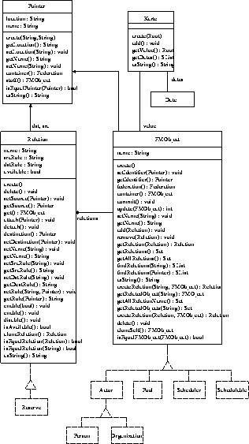

実現方式
ファシリティ管理の実現方式について述べる。
ファシリティ管理の実現方式は関しては2つの側面から言及することができる。一つは
純粋にアプリケーション空間としてのファシリティ管理を実現する構成要素群と、他方
はそのアプリケーション空間が実際にOZの環境上に実現される上で必要とな
る構成要素群である。
この両者は明確にその役割を異にしており、と同時に意味的には直接、両者の
世界が混合することはない。具体的に後者は前者のアプリケーションを
OZ環境上に実現するための役割を担うセルという構成要素に関わる実
現方式に閉じており、一方、アプリケーション空間としての方は、それらOZ
環境に固有な意味的構成要素には、全く依存することなく実現されている。
以下ではこれら2つの側面からそれぞれの実現方式に言及する。
- ファシリティ管理中核機構の実現方式
-
ファシリティ管理のアプリケーションとしての中核機構を実現するクラス群を示す。
- FMObject
ファシリティ管理に出現する全てのアプリケーションを総称する
クラスである。利用者の利用できる全てのリソースはこの
FMObjectの、あるいはその子孫クラスのインスタンスとなる。
- Relation
利用者によるリソースの共有を可能とするために、
FMObject間に形成される全ての関係を総称するクラスである。対象
リソースを共有する上で形成される全ての関係は、この
Relationクラスのインスタンスとなる。
- Pointer
共有の対象となるリソースであるFMObjectのインスタンス
を、その管理領域内において一意に識別するための情報を保持するための
クラスである。各FMObjectのインスタンスはそれが生成された時点で
一意な識別子を付与され、各々のFMObjectに対する指示は、その一意な識別
子を表現するpointerクラスのインスタンスにより表現される。
- Karte
ファシリティ管理におけるFMObjectに対する操作(事象)の記録を保持する
具体クラスである。FMObjectに対する識別子をキーとし、関係付け
られたRelationとの辞書として実現されており、当該FMObjectに関する履
歴を保持することができる。
- Actor, Pool, Organization, etc.
前述、FMObjectのより具体的利用意図を表現するべく特殊化され
た子孫クラス群である。例えばActorは「人」、ないし「役割」と
云ったリソースを表現し、
PoolはFMObject自体を集合として蓄えることのできるもの、といった
用途を表現する抽象クラスとして定義されている。

Figure: ファシリティ管理中核機構の実現方式
- セルへの写像と実現方式
-
前項のファシリティ管理オブジェクト群を実際の一つのセル上で実現するための
クラス群を示す。
- FMContainer
ファシリティ管理として実際に実行されるセル毎に1個、必ず存在し、
当該セル中のファシリティ管理に登場するKWFMObjの
インスタンスを格納、保持、管理するクラスである。
- Archiver
上述のFMContainer複数に跨ってFMObjectの移動等が行われた
際、その管理移管の行われた先方のFMContainerへのチェインを表現する
クラスである。
Figure: セルへの写像と実現方式
Copyright(c) 1996-1998 IPA, ETL, AT21, FSIABC, FXIS, InArc, MRI, NUL, SBC, Sharp, TEC, TIS
Contact: oz-admin@oz.ipa.go.jp